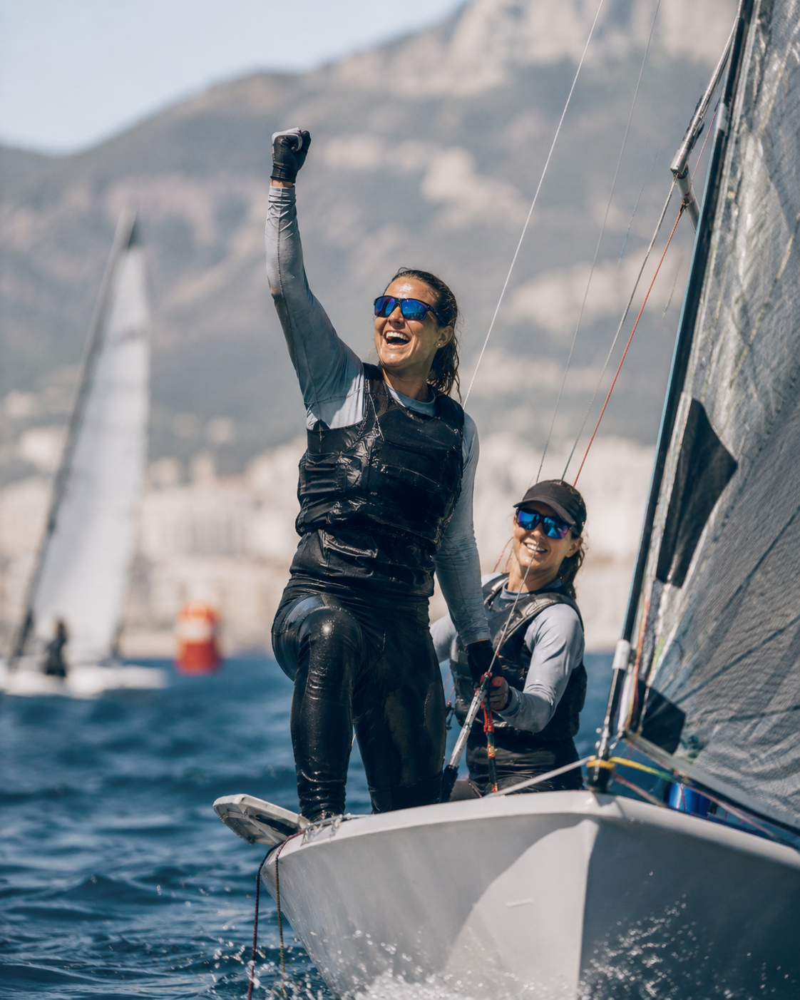

01
Atletas
Perfis com classe, clube, percurso, resultados e ligação aos programas de alto rendimento.
Conhecer atletas →Atletas, Equipas FPV, preparação olímpica, critérios de seleção e resultados internacionais numa área coerente e própria da realidade da vela.
Esta proposta organiza a informação que a FPV já trabalha — atletas, Equipas FPV, Projeto Olímpico e critérios de seleção — sem replicar a lógica de “seleções” do futebol.
Perfis com classe, clube, percurso, resultados e ligação aos programas de alto rendimento.
Conhecer atletas →
Uma área dedicada às estruturas e equipas que representam a Federação em contexto internacional.
Conhecer estrutura →
Objetivos, preparação, critérios e caminho competitivo para Los Angeles 2028.
Ver Projeto Olímpico →
Documentação oficial, regras de elegibilidade e processos apresentados de forma clara.
Consultar documentos →
Resultados relevantes dos atletas e equipas de alto rendimento, organizados por competição.
Ver resultados →
Contexto simples sobre as classes olímpicas e o enquadramento competitivo internacional.
Conhecer classes →Uma área editorial e institucional para explicar preparação, critérios e evolução do projeto olímpico sem misturar este conteúdo com a navegação geral de competição.